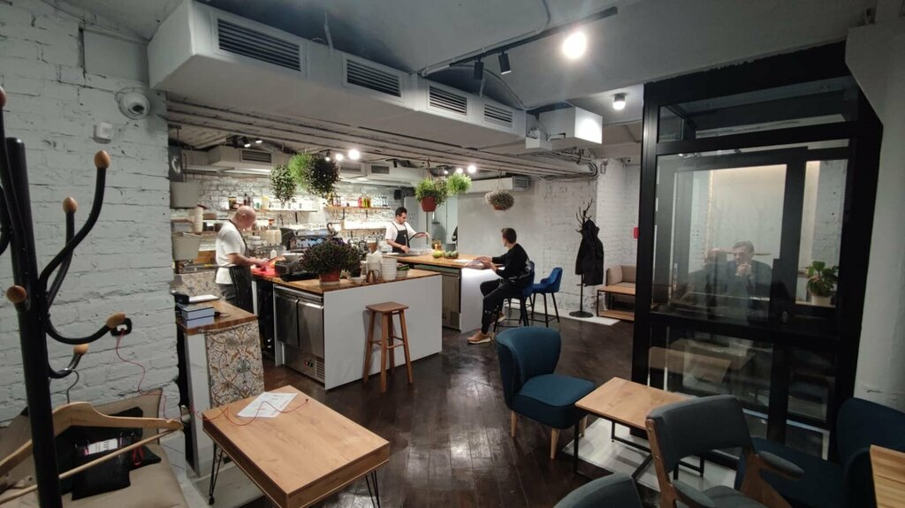
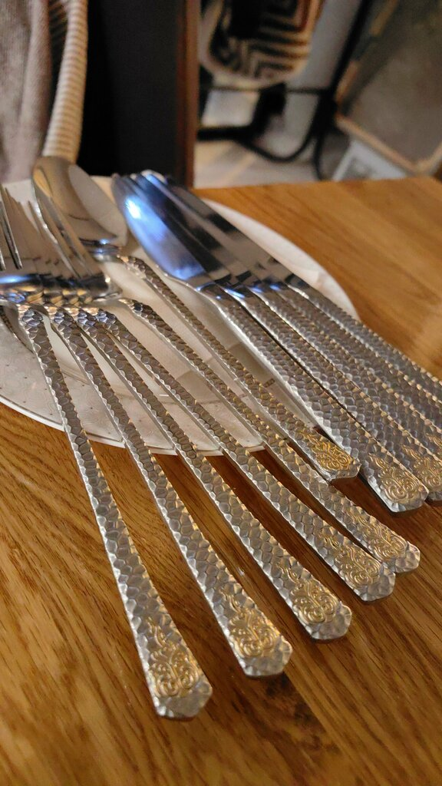

РЕСТОРАН & БАРМОСКВА · ПЕТРОВКА, 30/7
01 / О НАС
На Петровке.
Увидимся здесь.
Мы — One Chef Studio, ресторан и бар в Москве на Петровке, 30/7.
Заглядывайте на завтрак или приходите вечером. К нам можно с собакой. А еду и кофе можно взять с собой.
Можно с собакойЕда навыносКофе с собой


03 / ФОТОГАЛЕРЕЯ
Поближе
к студии.
Моменты из официального Telegram One Chef Studio.

04 / КОНТАКТЫ
До встречи
на Петровке.
КОГДА ЗАГЛЯНУТЬ
09:00–23:00
Ежедневно
Иногда закрываемся на мероприятия. Перед визитом проверьте объявления в Telegram.